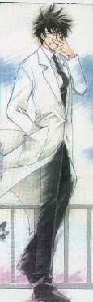
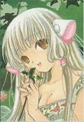
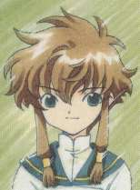
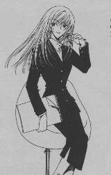
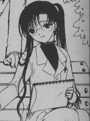
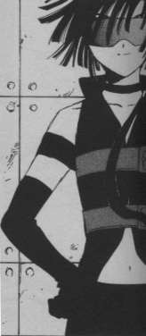
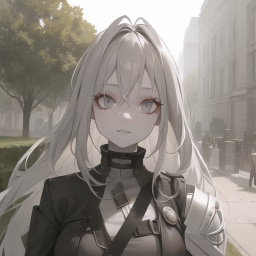

Introduction
The characters from Neon Genesis Evangelion are played straight as seen — their universe is the baseline for Neon Angelic Genesis; this page introduces the characters who have been merged in from a separate continuity, and thus been to an extent re-written. If you need a guide to the NGE characters, then you probably won't understand the first thing that's going on here…
Plus, there is one ringer, gathering together another interloper into the Evangelion world in my first Eva fic, Redemption-E.
Warning
There are some potential spoilers here, for the original titles (Angelic Layer, Magic Knight Rayearth II and Chobits), as well as Neon Angelic Genesis.
The (extended) cast in order of appearance.
Dr. Ichiro “Icchan” Mihara
Age: 30
Occupation: Chief of Cybernetics R&D for NERV
In the Neon Angelic Genesis world, there was no scope for an eccentric designer of exotic playthings. Instead of developing the technology that led to various forms of cybernetic toy, culminating in the battle dolls of Angelic Layer, he was recruited into NERV by Ritsuko Akagi, who had known him as a fellow student at Tokyo-2 University, where he had been a student of Dr. Shuuko Suzuhara.
The straitened circumstances did not serve to significantly alter his inventiveness or his eccentric sense of humour. While the physical technology did not permit the development of angel dolls in the early 2010s, his on-line collaboration with his former supervisor led to the release of the somewhat similar, purely virtual network game, Spirit Warriors, in 2012, by a small start-up based in the US.
Elda
[エルダ]

Age: 6 months (when first seen)
Occupation: Personal Digital Assistant
Once given access to the bio-computing technology used by Naoko Akagi to produce partials of herself in the MAGI, and the biological engineering used to craft the Evangelions, Dr. Mihara was finally able to produce a physical creation, the daughter of his mind, if not of his body.
Her psychology is, inevitably, similar to that of the parallel persocom later known as Chi.
Misaki Suzuhara
Age: 14
Occupation: Student and Evangelion pilot
Misaki is a tough, resourceful young woman, who seems to have managed to overcome the separate traumata of growing up after the Second Impact, the death of her father at a young age, and being placed into the foster care of her grandparents (when her mother, Shuuko, could, for various personal reasons, no longer handle her upbringing), and later her youngest aunt.
The only Evangelion pilot to have lost a father, rather than a mother, she becomes an unwitting wild-card in the team that SEELE, through Gendo Ikari, have assembled to achieve their Human Instrumentality Program.
A couple of years older than as seen in Angelic Layer, and tempered by the vicissitudes of her early life, she has modelled herself on the same iconic character that inspired her prototype's angel, and has matured into someone with the same sort of strength of character and self-possession as Hikaru Shido, Pillar of Cephiro-that-was.
Aunt Shouko
Age: 28
Occupation: TV current affairs journalist in Tokyo-3 and foster-parent to her niece Misaki
Has a cameo in the Sickness Unto Death, And… equivalent (Part 4/In the Ocean of Being).
Chitose Hibiya
Age: 19 (in 2005)
Occupation: Student at Tokyo-2 university (in 2005)
Later to become Ichiro's wife, she only has a cameo in the Birth of NERV flash-back (Part 8/The Shattered Tower).
Freya
[フレイヤ]

Age: 2 months (when first seen)
Occupation: Personal Digital Assistant, and heir to Dr. Mihara.
In this world, Icchan gave this name to his second Chobit/Persocom, and used this different styling (as seen in the crafting of the security persocom named Dita in the Angelic Layer/Chobits parallel).
Kitsune
[Nancy Elanor,
Lady Wolf]

Age: 98 (proper time, in Earth standard years)
Occupation: Making the best of all possible worlds
A visitor from the 34th century of an alternate future. Part of a hive/clan of emortal, genetically engineered, post-human clones, self-exiled after memetic poisoning, and recruited by the Powers of Earth — who may have contrived her, via subtle effects hidden within the genetic upgrades supplied for the creation and upgrade of each new generation — to help bring about an orderly Singularity by returning to the past, before the actual messy event.
With such a mission brief, she acts as the new factor in my first alternate Eva story, Redemption-E.
The character image artwork on this page is actually copyright to the ladies of Clamp, having been variously scanned from the Tokyopop editions of Chobits and Angelic Layer, and is used here as small fair-use out-takes (in support of the larger derivative work, Neon Angelic Genesis), save for the Kitsune image (a composite) and the sidebar images.
Text copy © Steve Gilham 2004
© Mr. Tines 2004